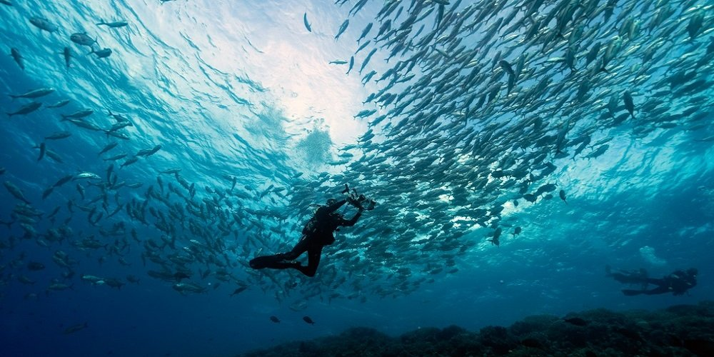
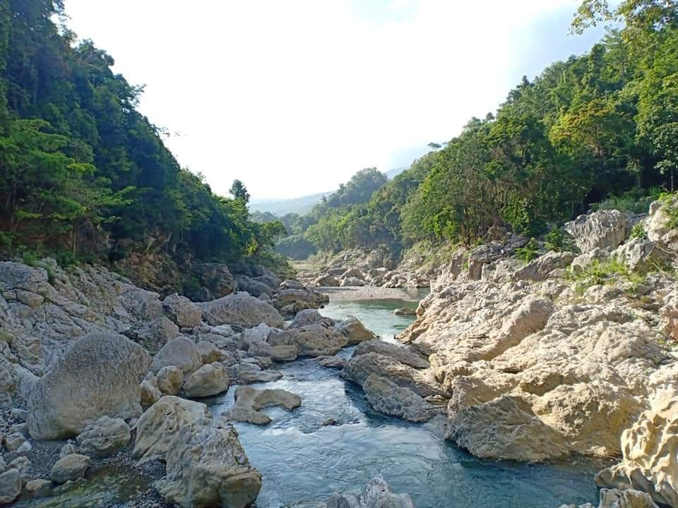
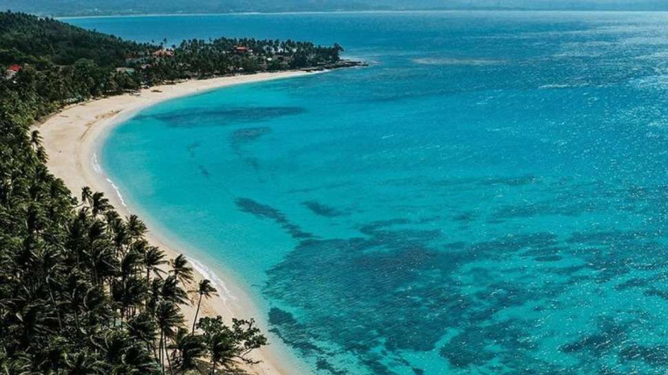

Tubbataha Reef, Palawan
More than being a top diving spot in the Philippines, Tubbataha Reef offers a grandeur like no other. This spectacular underwater world is considered as one of the most pristine coral reefs in the world. Surrounding you are fresh air and turquoise water that’s so clear and pristine you can see corals and fish 30 feet below.
Diving Tubbataha Reef is famous for its incredible marine biodiversity, dynamic underwater terrain, and a wide variety of large marine animals including sea turtles, manta rays, and various shark species.

Tinipak River, Rizal
Among the most famous places in Luzon perfect for weekend travelers is the Tinipak River. It used to be a hidden gem but has now become one of the most popular places to visit in Tanay, Rizal thanks to its picturesque beauty.

Saud Beach, Ilocos
Most of the idyllic beaches of the Philippines are found in the southern islands, but Saud Beach in the north, on the island of Luzon, stands on its own. The dark blue water, pristine beach lined with coconut trees, and clean sand make it the perfect beach.
Banol Beach, Coron, Palawan
Widely regarded as the best for tourists Banol Beach is located is on Coron Island, which is a popular destination for its inland lakes and lagoons. Here you will find paradisiacal white sandy beaches that stretch along the turquoise waters of Coron Bay.